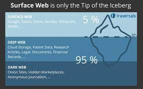
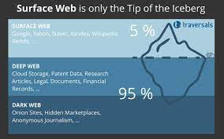

THE DARK WEB
 

Un aperçu sur le dark web:
Qu'est-ce que le dark web?
Et bien tout simplement, le dark web est tout ce qui ne se voit pas pour les utilisateurs normaux d'internet.En effet, c'est un tout autre monde de sites internet accessible via un certain type de logiciels.
Vous pensez que quand vous accédez à un navigateur web et que vous vous rendez sur un moteur de recherche, vous avez accès à tout?
Et bien vous vous trompez car en faisant cela vous effleurez à peine la surface d'internet.
Cette partie visible s'appelle le Surface web,et se constitue majoritairement de:La presse en ligne, Les réseaux sociaux, les sites publics
...bref tout ce qu'on peut trouver via une simple recherche sur un moteur de recherche.
cette section est indisponible pour le moment
-